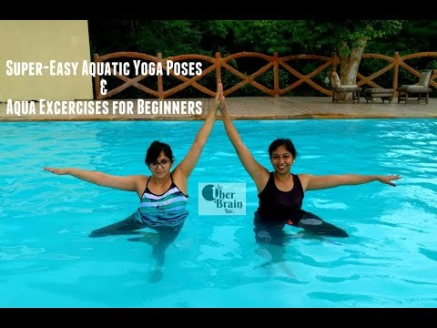

Echipament Yoga | Decathlon
 INTRĂ ÎN PROGRAMUL DE FIDELITATE: ADUNI PUNCTE ȘI PRIMEȘTI VOUCHERE!MobiHeaderMenuTitle MobiNavigationClose Listă favorite Contul meu Magazinul meu Contactați-ne 0 Coșul meu Coșul meu Sporturi Sporturi de vară 1500 produse sub 50 de lei COPII BARBATI FEMEI Recomandari de sezon Branduri Reduceri Produse Second Hand Oferte companii SERVICII Partenerul tau sportiv A ALERGARE AQUAGYM, AQUABIKE B BADMINTON BALET BASCHET BASEBALL BILIARD BODYBUILDING, CROSSTRAINING BOX C CAIAC CAMPING CANYONING CICLISM D DANS MODERN, STREET DANCE DARTS DINGHY, CATAMARAN (NAVIGATIE USOARA) DRUMETIE, TREKKING E ECHITATIE EDUCATIE FIZICA COPII, BEBE ESCALADA, ALPINISM F FITNESS CARDIO FOTBAL FOTBAL AMERICAN FREEDIVING FUTSAL G GIMNASTICA ARTISTICA, RITMICA GOLF H HANDBAL HOCHEI PE GHEATA HOCHEI PE IARBA I INOT J JIU-JITSU BRAZILIAN JUDO, AIKIDO K KARATE, TAEKWONDO KITE SURF M MERS SPORTIV, MERS NORDIC N NAVIGATIE,CROAZIERA,REGATA NUTRITIE SI INGRIJIRE SPORTIVA P PADEL PATINAJ PE GHEATA PESCUIT LA CRAP PESCUIT LA RAPITOR PESCUIT MARIN PESCUIT STATIONAR PETANQUE PIESE CICLISM PILATES SI TONIFIERE POWERKITE (LANDKITE) R ROLE RUGBY S SANIE SCHI SCHI DE TURA SCHI FOND SCRIMA SCUBA DIVING SKATEBOARD LONGBOARD SNORKELING SNOWBOARD SQUASH STAND UP PADDLE SURF, BODYBOARD, WAKEBOARD T TENIS TENIS DE MASA TENIS PE PLAJA TIR CU ARCUL TRAMBULINE TROTINETE V VANATOARE VOLEI VOLEI PE PLAJA W WATER POLO WINDSURF Y YOGA Z ZMEIE A B C D E F G H I J K L M N O P Q R S T U V W X Y Z #
Recomandări de sezon
Mobilitate urbană
Articole de plajă
Corturi
Darts
Sporturi de vară
Pescuit la crap
Toate sporturile
Imbracaminte Incaltaminte Articole pentru plaja Descopera Produsele Reduse Produse Eco copii Idei sportive pentru acasa - Copii Echipament Sporturi AccesoriiRecomandări de sezon
Îmbrăcăminte protecție UV
Sandale
Pantaloni scurti
Încălțăminte sport
Costume și șorturi de baie
Tricouri
Descoperă mai mult
Imbracaminte Incaltaminte Articole pentru plaja Produse mărimi mari Bărbați Descopera Produsele Reduse Produse Eco barbati Idei sportive pentru acasa - Adulti ACCESORII Alimentatie si RecuperareRecomandări de sezon
Tricouri
Pantaloni scurți
Încălțăminte sport
Costume și șorturi de baie
Pantaloni de trening
Sandale bărbați
Descoperă mai mult
Imbracaminte Incaltaminte Articole pentru plaja Produse mărimi mari Femei Descopera Produsele Reduse Produse Eco femei Idei sportive pentru acasa - Adulti ACCESORII Alimentatie si RecuperareRecomandări de sezon
Incaltaminte sport
Tricouri
Fuste, Pantaloni scurți
Costume de baie
Sandale
Colanți femei
Descoperă mai mult
Atelier - Reparatie, Intretinere, Personalizare Borna Plus Card de Fidelitate Garantie Card Cadou Card Avantaj Cariera Sfaturi Inovatii Fabricat in Romania Concepere Eco Arunca Istet Informație Închide A apărut o eroare. Închide Yoga Accesorii, Saltele Yoga Imbracaminte femei Imbracaminte barbatiYoga
Accesorii, Saltele Yoga Saltele yoga Caramizi si curele Huse si accesorii Vezi toate produsele Imbracaminte femei Colanti Bustiere si tricouri Pantaloni si bluze Vezi toate produsele Imbracaminte barbati Triocuri si pantaloni scurti Bluze si pantaloni lungi Vezi toate produsele Reduceri
articole Yoga Descoperă
YOGA:CORP ȘI SPIRIT
Accesorii Yoga Saltele Yoga Caramizi/Curele Perne/Huse Descoperă produsele 24 , 99 lei DOMYOS CĂRĂMIDĂ YOGA SPUMĂ Descopera Produsele DOMYOS CUREA YOGA DIN BUMBAC BIOLOGIC 21 , 99 lei Descopera Produsul DOMYOS SALTEA YOGA UȘOARĂ 4 MM 39 , 99 lei Descopera Produsul 21 , 99 lei DOMYOS HUSĂ SALTEA YOGA Descopera Produsele Info magazine PENTRU PRODUSELE
DECATHLON SFATURI SPORTIVE
PENTRU #SPORTACASĂ DECATHLON APP
DISPONIBIL ÎN PLAY STORE ȘI APP STORE MODALITĂȚI DE LIVRARE Despre Decathlon Cine suntem? Comunicate de presă Magazinele noastre Cariere Inovații Calitate garantată, prețuri mici tot anul Fabricat în România Contactați-ne Comandă online Cum comand Livrare Modalități de plată Contul meu Decathlon Procedură de retur Servicii Card de fidelitate Card Cadou Card Avantaj Garanție Garanţie pe viaţă B'TWIN Atelier Decathlon Second Hand Rechemare produse Opinia Dvs Contează Mențiuni legale Termeni si condiții Termeni si condiții program fidelitate Termeni si condiții de vânzare B2B Protecția datelor personale Prelucrarea datelor personale pentru servicii in magazin Politică de confidențialitate Cookies ANPC SOL Decathlon - partenerul tău sportiv Sfaturi sportive Decathlon Coach Programul Decathlon de Afiliere 48 de tari și regiuni Europa Germania Austria Belgia Bulgaria Croatia Danemarca Estonia Elvetia Finlanda Franta Irlanda Islanda Italia Letonia Lituania Luxemburg Marea Britanie Norvegia Olanda Polonia Portugalia Republica Ceha Romania Rusia Slovacia Slovenia Spania Suedia Turcia Ucraina Ungaria Asia China Hong Kong India Indonezia Japonia Malaesia Filipine Singapore Taiwan Thailanda Vietnam America de Nord Canada Guadeloupe Martinica Mexic America de Sud Brazilia Africa Africa de Sud Maroc Reunion Modalități de plată NE GĂSIȚI PE Termeni și Condiții - Protecția datelor personale - Prelucrarea datelor personale pentru servicii in magazin - F.A.Q - Rechemare produse